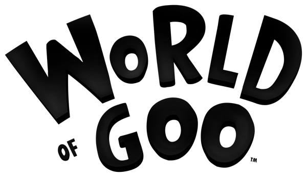

Puzzle · 2008
World of Goo
Indie engineering with a sense of dread, charm and structural integrity.

Cover: Wikipedia: World of Goo
Facts
- Released
- 2008-10-13
- Genre
- Physics Puzzle
- Category
- Puzzle
- Platforms
- Mobile, Nintendo, PC
- Developers
- 2D Boy
- Publishers
- 2D Boy
PC requirements
- Minimum
- [object Object]
- Recommended
- [object Object]